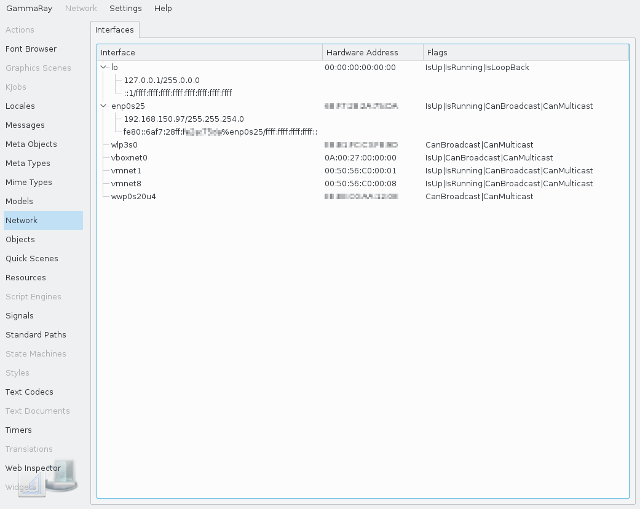

The network interface view shows you all network interfaces and their corresponding states as seen by Qt on the target system.

For each interface you see its:
Additionally, all IPv4 or IPv6 addresses configured for an interface are shown below the corresponding interface.